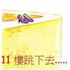
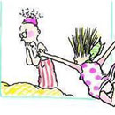
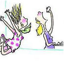
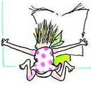
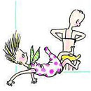
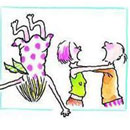
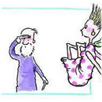
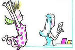
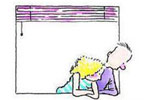

跳不跳楼都需要坚强的理由
突然想到古今中外很多男人女人注定就是在一起的，除非你问我罗密欧出来朱丽叶以外还爱过谁？
一生谈一次恋爱是最好的，若谈的次数多了，会疲倦，会习惯分离，慢慢会变得行尸走肉，你想要相亲么？为了结婚才去拍拖，很可悲好不好。那天中午老爸老妈居然问我：你现在是要结婚了么？现在搞这些有什么意思么！你没看到新闻前几天一个系哥的说失恋了要跳楼么。要是以后要分了他拿着菜刀来找你要生要死的怎么办！？”我忍住了笑。我觉得很滑稽，你你你们能想象小样拿着菜刀来威胁我然后要生要死的样子么？
我一直很不孝，我说：我警告你们 这种事你们不要管！关你P事啊！
啊。又来，我妈又再重复她会说的话：什么不用我管，是我生的你诶！不用我管？你现在可以自立了么？没想到我当初那么辛苦生你出来，现在你居然……………..
啊。自从我叛逆以来，吵了十三年了吧、长大吧长大吧快点长大吧 那样我就会懂事，那样就不用吵了。
其实以前年轻时吵得跟厉害 现在姐都不稀罕了 他们想吵唧唧歪歪的时候姐都懒得搭理 折腾吧折腾吧！
———————这是篇08年的日志，翻出来更新吧。

我从11楼跳下去
我看到10楼恩爱的夫妇正在互殴
我看到9楼坚强的Peter正在偷偷哭泣

8楼的丫妹发现未婚夫跟好朋友上床

7楼的丹丹在吃抗忧郁症药丸

6楼的失业的阿信还是每天看报纸找工作

5楼受人敬重的王老师正在偷穿老婆内衣

4楼的Rose又和男友闹分手

3楼的丫伯每天都盼望有人来探访

在我跳下之前，
我以为我是世上最倒霉的人
我看完他们之后，
深深觉得其实自己过得还不错

所有刚才被我看到的人，
现在都在看着我
我想他们看了我以后，
也会觉得其实自己过得还不错…
我想离开世界的理由
我的名是：石惠 我的真实理由：
人性的丑恶，世人的冷漠，太多的无奈，很多小动物被人类残害，甚至人还在残害着自己，这个世界太需要最终的审判了，看了那么多新闻报道，好多受害的都是普通的百姓，我很爱祖国，可是祖国你爱你的人民么？你拿什么爱？官商勾结吗？钱钱钱！一个毒药，一个谁都能爱上的红色海洛因！
我的名是：卜遥 我的真实理由：
我不难过 只是觉得人类活着都毫无意义 宇宙浩瀚无限 人类到现在为止都不能真正的认清宇宙 也许在宇宙里 地球渺小的如同尘埃 哪天就会被宇宙清除 这些 人类可以预知吗 可以阻挡吗 这样想来 人类这么累的上学 工作 勾心斗角 说不定明天就会化为尘埃 在所有人都不知道的情况下 在你正学英语 在你正要升职 在你正要结婚的时候 这样想来 有意思吗
人性太冷酷黑暗奸诈，看不到善良的价值，只看到利益的尖刀！爱情靠不住，友情很薄弱，亲情也经不起金钱的考验，什么都不能长久保持，一切都很虚幻脆弱，有什么值得留恋的呢？
我不想离开世界的理由
我的名是：雷 我的真实理由：
活着是为了死个明白。
我的名是：食人鱼 我的真实理由：
偏要活给你们看
好好活着,因为我们会死很久很久…